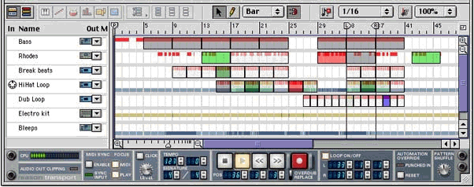
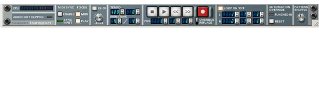

Once you are capable of producing sounds using a physical or virtual instrument, you will want to capture either the performance or the actual sound. To do this you may use either a MIDI sequencer or an audio recorder.
MIDI Sequencer
The Musical Instrument Digital Interface defines specific musical gestures that are represented by series' of digital commands. A MIDI sequencer keeps track of commands issued, the order they are issued in, and and their location in bars and beats .It stores them in memory in the sequence in which they occurred. Once a MIDI performance is recorded, the sequence of musical events can be played back and edited with a great degree of specificity.
Audio Recorder
The sound produced by an instrumental performance can also be captured using an audio recording device. In the physical world this may be a tape recorder or a dedicated hard disk recording system. Today's computers are powerful enough to emulate such a recording device using the hardware and software you already own. By using the computer as a virtual recording device to capture audio from the physical world, you have the power to combine this audio with captured MIDI performances in a single software environment.
For this course we will be using Reason's Sequencer. In later semesters, you will use more advanced MIDI and audio recording tools.
This is Reason's MIDI Sequencer tool.

While there are a number of hardware-based MIDI sequencers available on the
market today, we will focus on computer software for capturing and editing MIDI
performances. In general, these look a lot like real audio recorders, complete
with transport buttons, but also have a great many other tools for manipulating
MIDI information.
Any MIDI data sent from a controller is recorded into a sequencer track. A metronome is required so a performance can match the rhythmic grid set up in the sequencer. Much of what we learn about MIDI recording and editing we can apply to working with audio in hard-disk recording.
There are four ways of capturing a MIDI performance:
We'll be getting into MIDI recording starting in next week's class.
|  | |
This is the transport window in Reason. Use your mouse to see where the controls for the various record modes are located.